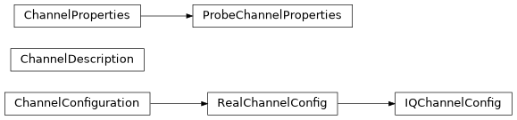

channel#
Control channel properties.
Full path: iqm.pulse.playlist.channel
Functions
|
Internal function to get channel properties. |
Get channel properties from Station Control controller settings following the standard convention. |
|
|
Round a time duration to the least common multiple of the granularities of the given channels. |
Classes
Base class for configuring channels. |
|
Channel specific data, including tables for the instructions and waveforms used. |
|
Defines the properties of a control or measurement channel. |
|
Requested configuration of an IQ channel. |
|
|
|
Requested configuration of a real channel. |
Inheritance
